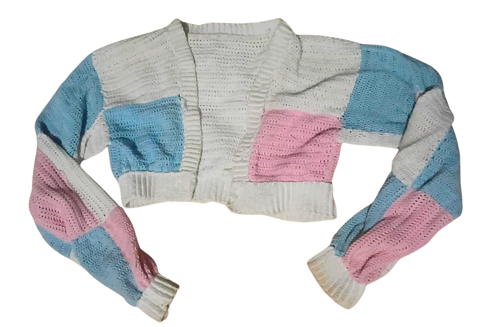
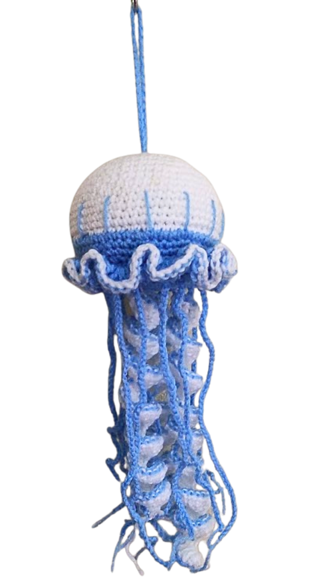
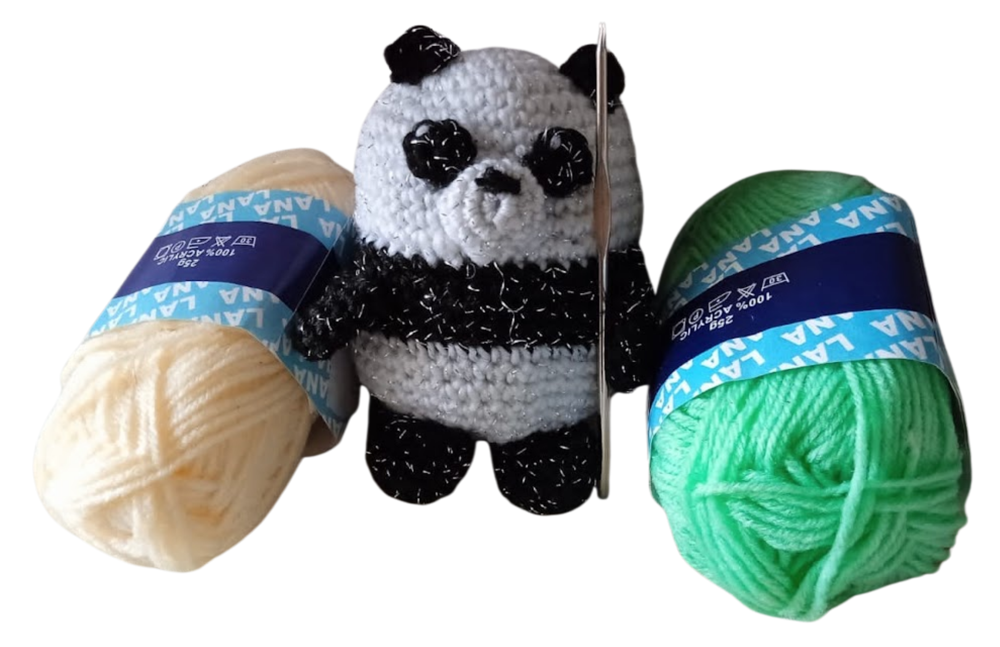
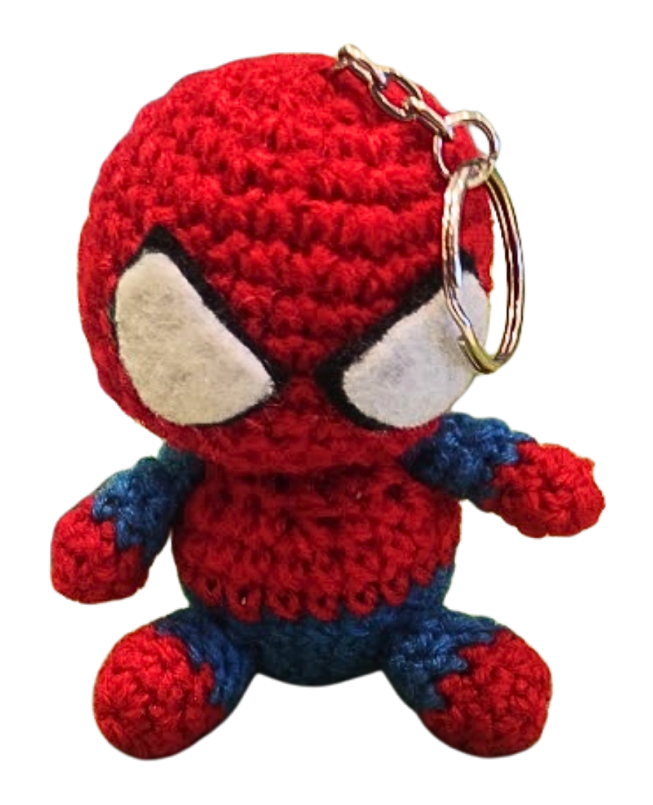
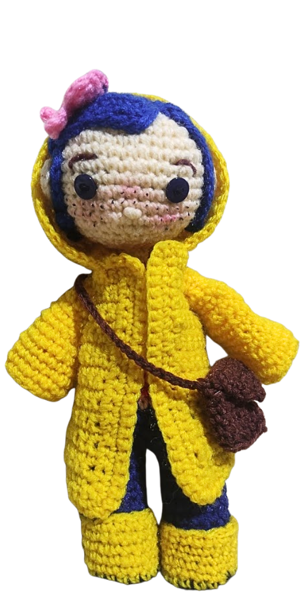
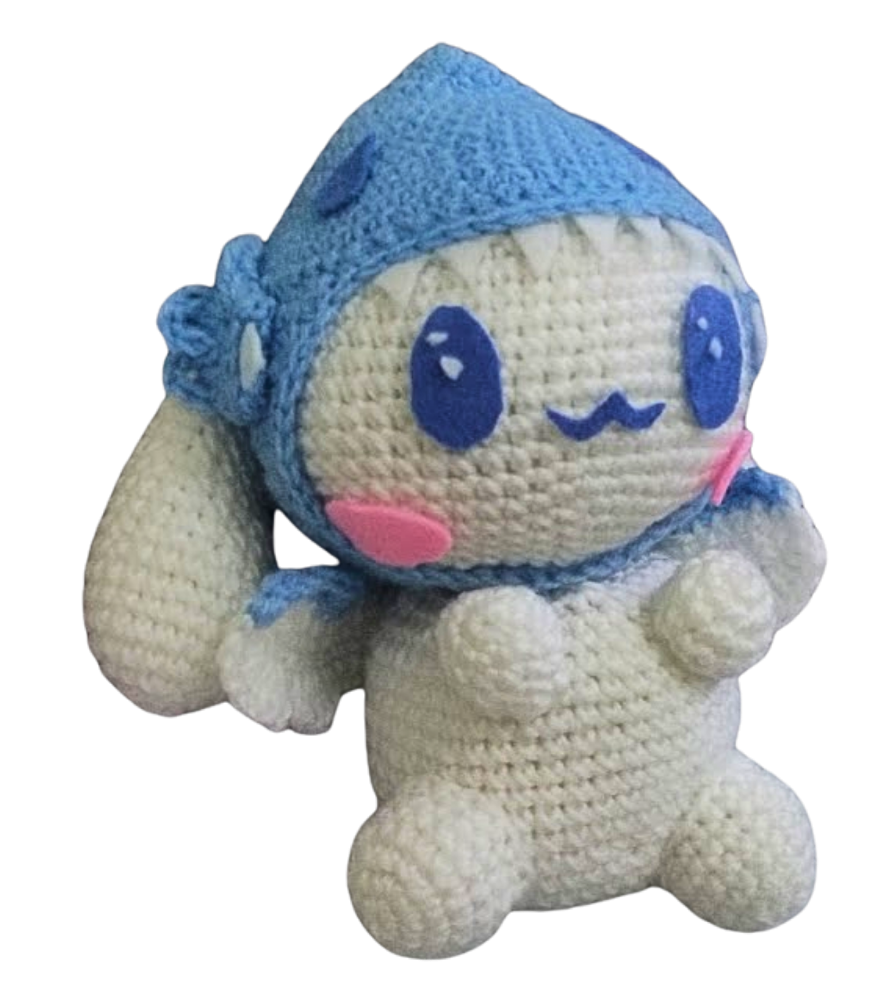

Ropa
Suéteres, gorros, camisas, faldas, pantalones, bufandas, zapatos, bikinis y vestidos: casi cualquier prenda se puede tejer.
De $20 a $50Peluches, ropa y accesorios tejidos a mano. Puede llevarse una pieza ya lista o encargarnos una a su gusto: con su idea, sus colores y su medida.

Trabajamos con lana y, en las prendas de vestir, con algodón. Todos nuestros productos son lavables.

Suéteres, gorros, camisas, faldas, pantalones, bufandas, zapatos, bikinis y vestidos: casi cualquier prenda se puede tejer.
De $20 a $50
Amigurumis y flores tejidas, ideales para regalar a alguien especial.
De $5 a $20
Manteles, caminos de mesa, posavasos y cortinas que dan un toque artesanal a cada espacio.
Consulte su precio
Llaveros y otros detalles tejidos para completar su look o para obsequiar.
Consulte su precioCada una se teje a mano, puntada a puntada.




Un proyecto nacido del cariño por el tejido.
A los 10 años, nuestra fundadora aprendió a tejer crochet de la mano de su abuela, y desde entonces el amor por el tejido nunca se fue. Amorumi nació después, como un proyecto lleno de ilusión para compartir peluches y prendas tejidas a mano.
Amorumi une dos palabras: amigurumi, el nombre japonés de los peluches tejidos a crochet, y amor. Es lo que ponemos en cada puntada.
 Patrón
Patrón Resultado
Resultado¿Tiene una idea o una foto de referencia? Podemos tejerla con los cambios que usted prefiera. También puede explorar nuestros patrones, que muestran el dibujo de cada diseño junto a su resultado terminado, como este Cárdigan Granny Square.
Ver patronesContamos con productos listos para la venta y con piezas personalizadas por encargo.
Cuéntenosla y la tejemos con mucho amor.
Hacer mi pedido